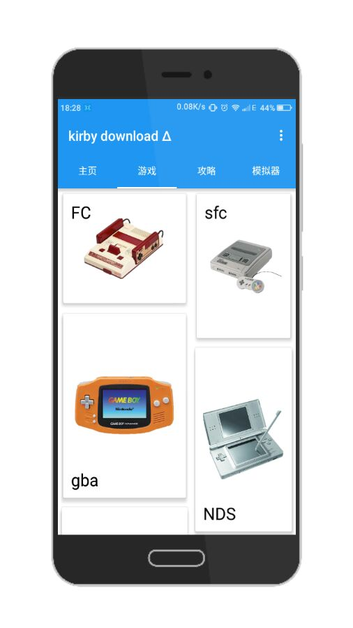
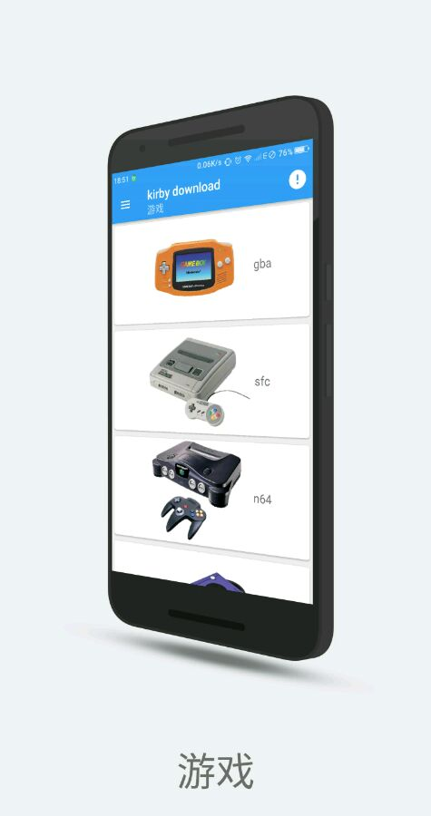

写在前面： 由于很多东西已经无法考证
其实就是懒，当初没记下来，所以早期的版本可能会有记不清版本号的情况，不过大概还是能对的上时间的。
开局一段话，内容全靠编
大家好，众所不那么周知 Kirby Assistant 是一款可以下载星之卡比系列游戏的软件，第一个有意义的版本诞生于 2017 年 1 月 15 日 我钦定的。那这过去的时间里究竟发过什么有趣的事？或者说是怎么发展的？那接着往下看吧！电脑用户可以用过左边的栏目快速定位，手机用户，对不住啦
源自想法
任何应用的诞生都应当有一些这样那样的理由，Kirby Assistant 也不例外。老用户可能知道这款程序最早的名字是 Kirby Download 的，那他又是怎么诞生的呢？这还要从 wwylele 说起。当时他在 星之卡比吧 里编写一款可以编辑 星之卡比:梦之泉物语 DX 的地图编辑器，其中一楼发的图中背景是 IDE，里面的是编辑器源码，前景是编辑器本体，然后楼中楼里有人说「看源码」之类的话。当时我内心就：EXM？还有这种操作吗？太炫酷了，这就算是我想学习编程的起源了。
再后来就是接手吧盘的事了，具体时间已经无从考证，因为 wwylele 已经删除了原贴，但是根据 为啥置顶的资源被删了 这帖的发布时间 2016-11-27 ，以及我发的 发布，肯德基豪华午餐（雾 kirby download 发布 2016-11-05 以及 我个人看法！？以及水一帖！？ 2016-11-29 这两贴的时间来看，最早在 2016-11-05 时我已经接手了贴吧并且有了 Kirby Download 初代版本，所以姑且推算在 2016-11 前我接手了吧盘吧。
那接手了，可不能只是简单的吧资源放在我名下就完事了。如果有的人嫌访问吧盘麻烦怎么办？如果有的人不能迅速找不到想要的资源怎么办？如果有的人记不住地址怎么办？亡命三连 那可不得了，这得赶紧搞个东西出来方便一下。脑子里突然闪过当年种下的草，正好最近有看到 iApp，这个可以快速编写程序，那就搞呗？
未发布的初代,绝唱 iApp
从零开坑
搞！说的轻巧，那得有好的构思啊。那怎么做？怎么设计？卡片？不行，效率太低，那就列表？诶，这个绝妙，可以快速定位。用之前下载的 iApp 教程就这样动手起来，十分简单，甚至不用动手编写，只需要拖动就可以了。这可让我第一次尝试就尝到了甜头，顺顺利利的就做了几个列表出来。
无力吐槽的图标
列表是有了，那图标？既然这是关于 星之卡比 的程序，那就用一张官方的图，后面再用 PS Touch 做一个背景上去，就是下面这个 
什么?这也太丑了吧？你看这色彩，这布局，这裁剪，丑到家了。不过当时可没有人来帮我做设计，就现先这样用吧。
图标有了，凑合能用的程序也有了，那叫什么名字呢？这是关于 星之卡比 的程序，可以用来下资源，你可能认为理所当然的叫 卡比下载器？不不不，根据 母语羞涩原理 当然是叫 Kirby Download 啦！
这就算开始了吧
然后我就带着这个样子的程序去贴吧发帖了当然因为傻逼百度这贴已经找不到了 对了，图标我换了，长这样  而且当时还做了个 视频
而且当时还做了个 视频 辣眼睛注意
虽然不好用 但 你好 AndroLua 你好 Kirby Download
初识 AndroLua
时间一天天过着，初代版本也在不断更新虽然没更新多久。可是 iApp 只能拖动的布局已经不能满足我了，我需要更好用的语言，更好用的 ide。迫于当时觉得 Java 入门门槛过于高，正好 AndroLua 又在盛行，我也就选择使用这个来接着编写了。这是一个由 nirenr 一个人改编的，基于 Lua 语言，但是有一些 Java 语法成分的 解释型语言。我估计就是因为太好用，太方便才会有人用的。不过成也方便，败也方便。（指弱类型）
崭新的 Kirby Download
那用了新的语言，怎么能不重新设计界面呢，首先就是界面大改当然这是测试版界面 
新的图标，一定要极简，本文设计，质感设计都要有，于是就有了下面这样 
这样，Kirby Download钦定的诞生日就有了 2019-1-15
完整的资源
因为还有学业，所以不能做到日更，所以在周更和双周更的情况下终于在 2017-03-25 收录了绝大部分资源，此时应用界面已经比较现代了并且傻逼一样的给应用名末尾加了个 β 
可以说，这个主页列表界面基本上维持到 Lua 版本结束
并且在此之前使用了 fir 托管软件，地址：https://fir.im/kirby
跨越 版本 1.0
1.0 算是已经接近 Lua 版本的尾声了，此时发布了一个对今后影响十分巨大的主页界面 
而且在此之前更换了新的图标，不过这个图标没有持续很久使用 
但是这个版本 bug 居多，很多人反映无法使用，所以我很快迭代了
震惊 KD 惨遭被盗
哈哈哈这个应该是个人开发者必经的，总是会被二次打包的，不过我倒是没有特别在意，只是在贴吧发了 这个帖子 而已
虚假的官网
在上面那些事情的某个期间，我去一个模板网站制作了一个 官网 其实就是改改图片，改改文本而已
停止支持
不是停止 KD，而是停止版本支持，就在 2017-05-05 这一天发的 kirby download Δ 中
你好 Java
为什么
其实 AndrodLua 挺好用的，那么我为什么要换呢？
扩展性
是的 AndrodLua 的扩展性十分糟糕，以至于很多新的特性无法使用，在这种情况下我毅然选择了 Java。
停更,但不是永远
在使用 Java 编写的时候我不得不停止更新 Lua 版本的 KD，不过没有持续很久。不得不说 Java 是安卓开发的主流，我遇到的很多问题都可以得到有效解决，这种前所未有的有效，让我在不到两个月的时间里就搞定了 Java 版本的开发。
手滑的重要性（雾
在 2017-06-20 这天发售了手滑铁卢事件，不过吧，这个时候我已经准备 Java 版本的开发了，所以丢失的 Lua 版本源码也无伤大碍个屁 参阅咳咳，我告诉你们啊。。。
来了来了,他来了
2017-08-14 这天算是正式发布了 KD 的 Java 版吧，于是乎就有了我又来炒冷饭了，虫 ♤ 人一口 虫 ♤ 人一口 标题暴力，暗示那位大人偷走了我停更的时间咳咳咳界面如下 
同时这个图标也是从 Lua 版一直用到 Java 版 
V2？集合体？Slogan？2018？都是什么
永不弃坑 就是我除非我亏的没钱了
【绝不弃坑】【游戏资源看这里】kirby download 这个就是集合了一些链接，当时百度傻逼的审核机制还没有那么严格，这种帖子放现在肯定 gg
不仅有游戏
是的，这是从那时确定下来的 slogan 现在看来确实如此
什么什么？用户系统？闲聊？模拟器直接下载吗
2017-8-23 也就是 Java 版本发布后，更新了一个让我亏钱至今，甚至濒临几次倒闭的东西，用户系统与文件服务。 确实很好用，比看评论区方便多了。就是……不能回复，至今也不行好尴尬啊
3.0 预告
真实手绘
手绘预告，见过没？【技术】kirby download3.0 预告就是这么秀，纯手绘，画出 3.0 的大部分想法原稿已丢失
除夕夜发布
此时 KD 界面已经是很接近现在的了，具体如图 
以及，真就除夕夜发布正好一周年，蛮有意义的 【预热】kirby download3.0，除夕夜发布！！ 【深夜更新】kirby download3.0
啊，大家好啊 这里炎忍，经过两个月的开发，迎来了 3.0 版本，接下来是更新日志: duang~ 深夜更新 1.新的图标，新的宣传图 2.新的菜单 3.攻略视频添加 4.稳定服务器 5.闲聊优化 6.全局滑动返回 7.优化捐赠 8.优化翻译，修复错误翻译 9.修改整体算法 10.重新设计启动界面 11.针对于安卓 7.1.2 进行优化 12.针对于虚拟按键进行优化 13.针对于安卓 4.4.4 进行优化 14.压缩体积，提升性能 15.进一步优化用户算法 … 更多优化，更新，请进入 app 感受吧！！
以上的当时的更新日志，也是发帖内容。
再见 Kirby Download
事件
3.0 更新两天后，由于一些现在不方便描述的的原因因为是 QQ 上发生的事，所以不多做描述。大概就是我被喷了，还是圈内人，然后我又玩玻璃心说实话真的受不住，就这么僵持了几天，我下架了 Kirby Assistant。 2019-2-25 我进行了 Kirby Assistant 仓库 的最后一次提交，Commit 信息是 「再见 Kirby download」，这个仓库的 commits 也定格在 53，不再更新
反思
这个事情过后我也反思自己，也确实做的不够好，如果做的很好，就不会引来别人的这种说法，这么想着，我在 QQ 空间发了如下说说  也算是预告吧
也算是预告吧
崭新的 你好 Kirby Assistant
从头来过
2019-2-27 我在贴吧发帖【资源】Kirby Assistant,这个界面基本定格至今了 
新的特性
感谢 AIDE 的更新，让我可以用到诸如自适应图标的新特性，并且在 0.4-beta-1 成功完美适配 AndroidP 这也是截止发文为止最新的 Android 正式版
撇弃旧框架
分别在 0.4-beta-3 、0.4-beta-6 和 0.4 版中撇弃了旧版本的条条框框，这也是成长最快的时期
新的图标
这是分别在 0.4-beta1  和 0.4-beta2
和 0.4-beta2  的图标，直到目前我也是最喜欢的两个，后面做成了双图标模式
的图标，直到目前我也是最喜欢的两个，后面做成了双图标模式
未来·炫动
现在，撇弃百度贴吧与 QQ，舞台交给 GitHub
全新的 KA
2018-12-9 我推出了全新版本的 KA ——未来·炫动，这个版本拥有诸多特性，完整的 AndroidP API，完整的自适应图标，双镜像仓库，以及最重要的新服务器结构虽然后面还让我丢数据了 如果说 0.4 大版本是 KA 发展最快的时期，那未来·炫动一定是我最推荐的版本
更新
1.2.6（Build 29）引入的更新一定是最刚需的，往往程序更新了却不知道，这次，他来了，引入 Build 比较概念，让你随时都能用上新版本
全新架构 PBL
如果说更新是刚需，让你享受新特性，那么 1.2.1（Build 24） 引入的全新服务器架构和 PBL 一定是更稳定的前提。前者拥有更快的响应速度，后者不会对用户有任何影响，但是会让我维护更方便这不是你丢失服务器数据的理由
无延迟启动
1.2（Build 23）引入的全新启动模式，根据 AndroidP API 编写，适配新特性，毫秒级启动速度
全新网站
这不是程序更新的范畴，但是息息相关 2019-2-15 这天我买了域名https://endureblaze.cn并且把 Kirby Assistant 的官网定为https://ka.endureblaze.cn
更全新的图标
在 1.2.7 版本我合并了两个图标并且 hk 流星 进行了微调  这也是到目前为止一直使用的图标
这也是到目前为止一直使用的图标
AndroidX，MD2，以及更小的体积
我购买了电脑，这让我可以跟方便的编写程序，更是把 Kirby Assistant 的体积压缩到更小
炫动了，未来呢
我想，我会一直保持不定期更新，这个程序我暂时不可能放弃的，即使再亏钱
未完待续
革命尚未完成，同志仍需努力
我还想说
Kirby Assistant 发展两年多来，实数不易，这让我也了解到生活的不易。是啊，谁都不好过，所以，希望以后还能多多下载，推荐给你身边玩星之卡比的人，或者，带 Ta 入坑
感谢名单
这是在 Kirby Assistant 发展道路上帮助过我的人，如果有疏漏，请联系我补充
排名无先后之分 点击名字可以跳转链接(如果有)
- 感谢在这个过程中所有给予我鼓励的人
- 感谢每一个捐赠者
- 感谢longxk2017(GithHub)进行繁体中文翻译
- 感谢hk 流星(酷安)进行图标绘制
- 感谢Markuss(酷安)进行图标绘制
- 感谢光之耀西(百度贴吧)进行英文翻译
- 感谢难难难 550(百度贴吧)进行英文翻译
- 感谢蝙蝠侠骑摩托车(百度贴吧)的资源投放
- 感谢★☆ 小伊布 ☆★(百度贴吧)进行图标绘制
- 感谢邵旭东(个人主页)提供的备案域名
- 感谢lxfly2000(GitHub)进行的程序协助
- 感谢塔林狐(酷安)进行编写 FAQ
- 感谢虚影无华(哔哩哔哩动画)制作的 星之卡比 100%计划 系列视频
- 感谢梦想卡比(百度贴吧)进行早期版本测试
- 感谢oxsm9(百度贴吧)的 红米 2A
- 感谢更多我应该感谢但记不住名字及人以及感谢我的父母